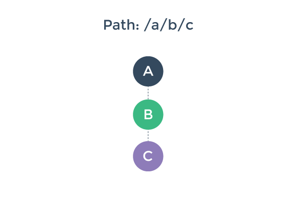
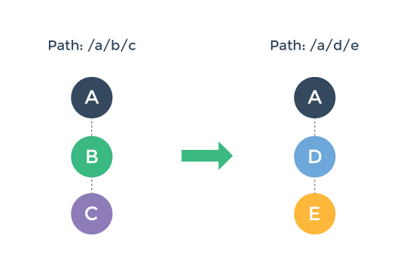
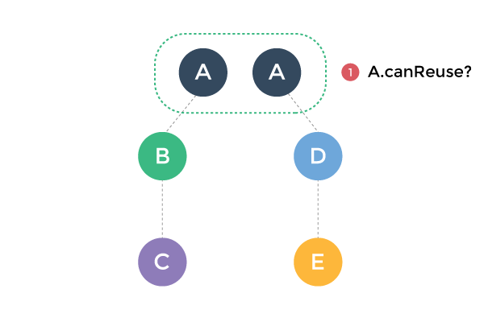
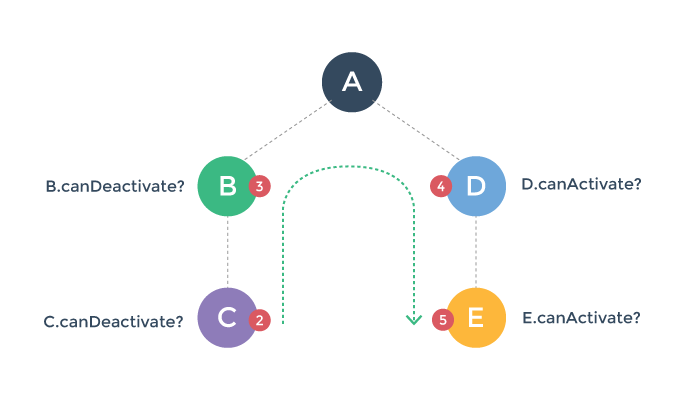
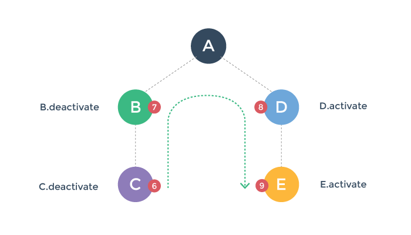

Install
Instruments
Flutter 2015
Sky widgets are built using a functional-reactive framework, which takes
inspiration from React. The central idea is
that you build your UI out of components. Components describe what their view
should look like given their current configuration and state. When a component’s
state changes, the component rebuilds its description, which the framework diffs
against the previous description in order to determine the minimal changes
needed in the underlying render tree to transition from one state to the next.
Hello World
To build an application, create a subclass of App and instantiate it:
1 2 3 4 5 6 7 8 9 10 11 | import 'package:sky/widgets.dart'; class HelloWorldApp extends App { Widget build() { return new Center(child: new Text('Hello, world!')); } } void main() { runApp(new HelloWorldApp()); } |
An app is comprised of (and is, itself, a) widgets. The most commonly authored
widgets are, like App, subclasses of Component. A component’s main job is
to implement Widget build() by returning newly-created instances of other
widgets. If a component builds other components, the framework will build those
components in turn until the process bottoms out in a collection of basic
widgets, such as those in sky/widgets/basic.dart. In the case ofHelloWorldApp, the build function simply returns a new Text node, which is
a basic widget representing a string of text.
Basic Widgets
Sky comes with a suite of powerful basic widgets, of which the following are
very commonly used:
Text: TheTextwidget lets you create a run of styled text within your
application.Row,Column: These flex widgets let you create flexible layouts in both
the horizontal (Row) and vertical (Column) directions. Its design is
based on the web’s flexbox layout model.Container: TheContainerwidget lets you create rectangular visual
element. A container can be decorated with aBoxDecoration, such as a
background, a border, or a shadow. AContainercan also have margins,
padding, and constraints applied to its size. In addition, aContainercan
be transformed in three dimensional space using a matrix.NetworkImage: TheNetworkImagewidget lets you display an image,
referenced using a URL. The underlying image is cached, which means if
severalNetworkImagewidgets refer to the same URL, they’ll share the
underlying image resource.
Below is a simple toolbar example that shows how to combine these widgets:
1 2 3 4 5 6 7 8 9 10 11 12 13 14 15 16 17 18 | import 'package:sky/widgets.dart'; class MyToolBar extends Component { Widget build() { return new Container( decoration: const BoxDecoration( backgroundColor: const Color(0xFF00FFFF) ), height: 56.0, padding: const EdgeDims.symmetric(horizontal: 8.0), child: new Row([ new NetworkImage(src: 'menu.png', width: 25.0, height: 25.0), new Flexible(child: new Text('My awesome toolbar')), new NetworkImage(src: 'search.png', width: 25.0, height: 25.0), ]) ); } } |
The MyToolBar component creates a cyan Container with a height of
56 device-independent pixels with an internal padding of 8 pixels,
both on the left and the right. Inside the container, MyToolBar uses
a Row layout. The middle child, the Text widget, is marked asFlexible, which means it expands to fill any remaining available
space that hasn’t been consumed by the inflexible children. You can
have multiple Flexible children and determine the ratio in which
they consume the available space using the flex argument toFlexible.
To use this component, we simply create an instance of MyToolBar in a build
function:
1 2 3 4 5 6 7 8 9 10 11 12 13 | import 'package:sky/widgets.dart'; import 'my_tool_bar.dart'; class DemoApp extends App { Widget build() { return new Center(child: new MyToolBar()); } } void main() { runApp(new DemoApp()); } |
Here, we’ve used the Center widget to center the toolbar within the view, both
vertically and horizontally. If we didn’t center the toolbar, it would fill the
view, both vertically and horizontally, because the root widget is sized to fill
the view.
Listening to Events
In addition to being stunningly beautiful, most applications react to user
input. The first step in building an interactive application is to listen for
input events. Let’s see how that works by creating a simple button:
1 2 3 4 5 6 7 8 9 10 11 12 13 14 15 16 17 18 19 20 21 22 23 24 25 26 27 28 29 | import 'package:sky/widgets.dart'; final BoxDecoration _decoration = new BoxDecoration( borderRadius: 5.0, gradient: new LinearGradient( start: Point.origin, end: const Point(0.0, 36.0), colors: [ const Color(0xFFEEEEEE), const Color(0xFFCCCCCC) ] ) ); class MyButton extends Component { Widget build() { return new Listener( onGestureTap: (event) { print('MyButton was tapped!'); }, child: new Container( height: 36.0, padding: const EdgeDims.all(8.0), margin: const EdgeDims.symmetric(horizontal: 8.0), decoration: _decoration, child: new Center( child: new Text('Engage') ) ) ); } } |
The Listener widget doesn’t have an visual representation but instead listens
for events bubbling through the application. When a tap gesture bubbles out from
the Container, the Listener will call its onGestureTap callback, in this
case printing a message to the console.
You can use Listener to listen for a variety of input events, including
low-level pointer events and higher-level gesture events, such as taps, scrolls,
and flings.
Generic Components
One of the most powerful features of components is the ability to pass around
references to already-built widgets and reuse them in your build function. For
example, we wouldn’t want to define a new button component every time we wanted
a button with a novel label:
1 2 3 4 5 6 7 8 9 10 11 12 13 14 15 16 17 18 19 20 21 22 | class MyButton extends Component { MyButton({ this.child, this.onPressed }); final Widget child; final Function onPressed; Widget build() { return new Listener( onGestureTap: (_) { if (onPressed != null) onPressed(); }, child: new Container( height: 36.0, padding: const EdgeDims.all(8.0), margin: const EdgeDims.symmetric(horizontal: 8.0), decoration: _decoration, child: new Center(child: child) ) ); } } |
Rather than providing the button’s label as a String, we’ve let the code that
uses MyButton provide an arbitrary Widget to put inside the button. For
example, we can put an elaborate layout involving text and an image inside the
button:
1 2 3 4 5 6 7 8 9 10 11 12 13 | Widget build() {
return new MyButton(
child: new ShrinkWrapWidth(
child: new Row([
new NetworkImage(src: 'thumbs-up.png', width: 25.0, height: 25.0),
new Container(
padding: const EdgeDims.only(left: 10.0),
child: new Text('Thumbs up')
)
])
)
);
}
|
State
By default, components are stateless. Components usually receive
arguments from their parent component in their constructor, which they typically
store in final member variables. When a component is asked to build, it uses
these stored values to derive new arguments for the subcomponents it creates.
For example, the generic version of MyButton above follows this pattern. In
this way, state naturally flows “down” the component hierachy.
Some components, however, have mutable state that represents the transient state
of that part of the user interface. For example, consider a dialog widget with
a checkbox. While the dialog is open, the user might check and uncheck the
checkbox several times before closing the dialog and committing the final value
of the checkbox to the underlying application data model.
1 2 3 4 5 6 7 8 9 10 11 12 13 14 15 16 17 18 19 20 21 22 23 24 25 26 27 28 29 30 31 32 33 34 35 36 37 38 39 40 41 42 43 44 45 46 47 48 49 | class MyCheckbox extends Component { MyCheckbox({ this.value, this.onChanged }); final bool value; final Function onChanged; Widget build() { Color color = value ? const Color(0xFF00FF00) : const Color(0xFF0000FF); return new Listener( onGestureTap: (_) => onChanged(!value), child: new Container( height: 25.0, width: 25.0, decoration: new BoxDecoration(backgroundColor: color) ) ); } } class MyDialog extends StatefulComponent { MyDialog({ this.onDismissed }); Function onDismissed; bool _checkboxValue = false; void _handleCheckboxValueChanged(bool value) { setState(() { _checkboxValue = value; }); } void syncConstructorArguments(MyDialog source) { onDismissed = source.onDismissed; } Widget build() { return new Row([ new MyCheckbox( value: _checkboxValue, onChanged: _handleCheckboxValueChanged ), new MyButton( onPressed: () => onDismissed(_checkboxValue), child: new Text("Save") ), ], justifyContent: FlexJustifyContent.center); } } |
The MyCheckbox component follows the pattern for stateless components. It
stores the values it receives in its constructor in final member variables,
which it then uses during its build function. Notice that when the user taps
on the checkbox, the checkbox itself doesn’t use value. Instead, the checkbox
calls a function it received from its parent component. This pattern lets you
store state higher in the component hierarchy, which causes the state to persist
for longer periods of time. In the extreme, the state stored on the App
component persists for the lifetime of the application.
The MyDialog component is more complicated because it is a stateful component.
Let’s walk through the differences in MyDialog caused by its being stateful:
MyDialogextends StatefulComponent instead of Component.MyDialoghas non-finalmember variables. Over the lifetime of the dialog,
we’ll need to modify the values of these member variables, which means we
cannot mark themfinal.MyDialoghas private member variables. By convention, components store
values they receive from their parent in public member variables and store
their own internal, transient state in private member variables. There’s no
requirement to follow this convention, but we’ve found that it helps keep us
organized.Whenever
MyDialogmodifies its transient state, the dialog does so inside
asetStatecallback. UsingsetStateis important because it marks the
component as dirty and schedules it to be rebuilt. If a component modifies
its transient state outside of asetStatecallback, the framework won’t
know that the component has changed state and might not call the component’sbuildfunction, which means the user interface might not update to reflect
the changed state.MyDialogimplements thesyncConstructorArgumentsmember function. To
understandsyncConstructorArguments, we’ll need to dive a bit deeper into
how thebuildfunction is used by the framework.A component’s
buildfunction returns a tree of widgets that represent a
“virtual” description of its appearance. The first time the framework callsbuild, the framework walks this description and creates a “physical” tree
ofRenderObjectsthat matches the description. When the framework callsbuildagain, the component still returns a fresh description of its
appearence, but this time the framework compares the new description with the
previous description and makes the minimal modifications to the underlyingRenderObjectsto make them match the new description.In this process, old stateless components are discarded and the new stateless
components created by the parent component are retained in the widget
hierchy. Old stateful components, however, cannot simply be discarded
because they contain state that needs to be preserved. Instead, the old
stateful components are retained in the widget hierarchy and asked tosyncConstructorArgumentswith the new instance of the component created by
the parent in itsbuildfunction.Without
syncConstructorArguments, the new values the parent component
passed to theMyDialogconstructor in the parent’sbuildfunction would
be lost because they would be stored only as member variables on the new
instance of the component, which is not retained in the component hiearchy.
Therefore, thesyncConstructorArgumentsfunction in a component should
updatethisto account for the new values the parent passed tosource
becausesourceis the authorative source of those values.By convention, components typically store the values they receive from their
parents in public member variables and their own internal state in private
member variables. Therefore, a typicalsyncConstructorArguments
implementation will copy the public, but not the private, member variables
fromsource. When following this convention, there is no need to copy over
the private member variables because those represent the internal state of
the object andthisis the authoritative source of that state.When implementing a
StatefulComponent, make sure to callsuper.syncConstructorArguments(source)from within yoursyncConstructorArguments()method, unless you are extendingStatefulComponentdirectly.
Finally, when the user taps on the “Save” button, MyDialog follows the same
pattern as MyCheckbox and calls a function passed in by its parent component
to return the final value of the checkbox up the hierarchy.
didMount and didUnmount
When a component is inserted into the widget tree, the framework calls thedidMount function on the component. When a component is removed from the
widget tree, the framework calls the didUnmount function on the component.
In some situations, a component that has been unmounted might again be mounted.
For example, a stateful component might receive a pre-built component from its
parent (similar to child from the MyButton example above) that the stateful
component might incorporate, then not incorporate, and then later incorporate
again in the widget tree it builds, according to its changing state.
Typically, a stateful component will override didMount to initialize any
non-trivial internal state. Initializing internal state in didMount is more
efficient (and less error-prone) than initializing that state during the
component’s constructor because parent executes the component’s constructor each
time the parent rebuilds even though the framework mounts only the first
instance into the widget hierarchy. (Instead of mounting later instances, the
framework passes them to the original instance in syncConstructorArguments so
that the first instance of the component can incorporate the values passed by
the parent to the component’s constructor.)
Components often override didUnmount to release resources or to cancel
subscriptions to event streams from outside the widget hierachy. When overriding
either didMount or didUnmount, a component should call its superclass’sdidMount or didUnmount function.
initState
The framework calls the initState function on stateful components before
building them. The default implementation of initState does nothing. If your
component requires non-trivial work to initialize its state, you should
override initState and do it there rather than doing it in the stateful
component’s constructor. If the component doesn’t need to be built (for
example, if it was constructed just to have its fields synchronized with
an existing stateful component) you’ll avoid unnecessary work. Also, some
operations that involve interacting with the widget hierarchy cannot be
done in a component’s constructor.
When overriding initState, a component should call its superclass’sinitState function.
Keys
If a component requires fine-grained control over which widgets sync with each
other, the component can assign keys to the widgets it builds. Without keys, the
framework matches widgets in the current and previous build according to theirruntimeType and the order in which they appear. With keys, the framework
requires that the two widgets have the same key as well as the sameruntimeType.
Keys are most useful in components that build many instances of the same type of
widget. For example, consider an infinite list component that builds just enough
copies of a particular widget to fill its visible region:
Without keys, the first entry in the current build would always sync with the
first entry in the previous build, even if, semantically, the first entry in
the list just scrolled off screen and is no longer visible in the viewport.By assigning each entry in the list a “semantic” key, the infinite list can
be more efficient because the framework will sync entries with matching
semantic keys and therefore similiar (or identical) visual appearances.
Moreover, syncing the entries semantically means that state retained in
stateful subcomponents will remain attached to the same semantic entry rather
than the entry in the same numerical position in the viewport.
Widgets for Applications
There are some widgets that do not correspond to on-screen pixels but that are
nonetheless useful for building applications.
Theme: Takes a ThemeData object in itsdataargument, to configure the Material Design theme of the rest of the application (as given in thechildargument).TaskDescription: Takes alabelthat names the application for the purpose of the Android task switcher. The colour of the application as used in the system UI is taken from the currentTheme.Navigator: Takes a single argument, which must be a long-lived instance ofNavigatorState. This object choreographs how the application goes from screen to screen (e.g. from the main screen to a settings screen), as well as modal dialogs, drawer state, and anything else that responds to the system “back” button. By convention theNavigatorStateobject is a private member variable of the class that inherits fromApp, initialized in theinitState()function. TheNavigatorStateconstructor takes a list ofRouteobjects, each of which takes anameargument giving a path to identify the window (e.g. “/“ for the home screen, “/settings” for the settings screen, etc), and abuilderargument that takes a method which itself takes anavigatorargument and arouteargument and returns aWidgetrepresenting that screen.
Putting this together, a basic application becomes:
1 2 3 4 5 6 7 8 9 10 11 12 13 14 15 16 17 18 19 20 21 22 23 24 25 26 27 28 29 30 31 32 33 34 | import 'package:sky/widgets.dart'; class DemoApp extends App { NavigationState _state; void initState() { _state = new NavigationState([ new Route( name: '/', builder: (navigator, route) { return new Center(child: new Text('Hello Slightly More Elaborate World')); } ) ]); super.initState(); } Widget build() { return new Theme( data: new ThemeData( brightness: ThemeBrightness.light ), child: new TaskDescription( label: 'Sky Demo', child: new Navigator(_state) ) ); } } void main() { runApp(new DemoApp()); } |
Useful debugging tools
This is a quick way to dump the entire widget tree to the console.
This can be quite useful in figuring out exactly what is going on when
working with the widgets system. For this to work, you have to have
launched your app with runApp().
1 | debugDumpApp();
|
Basic Usage
Creating a Single-page Application with Vue.js + vue-router is dead simple. With Vue.js, we are already breaking our application into components. When adding vue-router to the mix, all we need to do is map our components to the routes and let vue-router know where to render them. Here’s a basic example:
HTML
1 2 3 4 5 6 7 8 9 10 | <div id="app"> <h1>Hello App!</h1> <p> <!-- v-link directive --> <a v-link="/foo">GoFoo</a> <a v-link="/bar">GoBar</a> </p> <!-- route outlet --> <router-view></router-view> </div> |
JavaScript
The router needs a root component to render, Because we are using the HTML as the app template. for demo purposes, we will just use an empty one. You can pass in additional options here, but let’s keep it simple for now.Each route should map to a component, we’ll talk about nested routes later.router.start will create an instance of App and mount to the element matching the selector #app.
1 2 3 4 5 6 7 8 9 10 11 12 13 14 15 16 17 18 19 20 21 22 23 24 25 26 | // Define some components var Foo = Vue.extend({ template: "<p>is foo!</p>", }); var Bar = Vue.extend({ template: "<p>is bar!</p>", }); var App = Vue.extend({}); // create a router instance. var router = new VueRouter(); // Define some routes. router.map({ "/foo": { component: Foo, }, "/bar": { component: Bar, }, }); // now we can start the app! router.start(App, "#app"); |
You can also checkout this example live.
Nested Routes
Mapping nested routes to nested components is a common need, and it is also very simple with vue-router.
Suppose we have the following app:
1 2 3 | <div id="app"> <router-view></router-view> </div> |
The <router-view> here is a top-level outlet. It renders the component matched by a top level route:
Foo is rendered when /foo is matched
1 2 3 4 5 | router.map({
"/foo": {
component: Foo,
},
});
|
Similarly, a rendered component can also contain its own, nested <router-view>. For example, if we add one inside the Foo component’s template:
1 2 3 4 5 6 7 8 9 | // router-view is nest outlet var Foo = Vue.extend({ template: '<div class="foo">'+ "<h2>This is Foo!</h2>"+ "<router-view>"+ "</router-view>"+ "</div>", }); |
To render components into this nested outlet, we need to update our route config:
Now, with the above configuration, when you visit /foo, nothing will be rendered inside Foo‘s outlet, because no sub route is matched. Maybe you do want to render something there. In such case you can provide a / subroute in this case: Bar will be rendered inside Foo’s <router-view>。
1 2 3 4 5 6 7 8 9 10 11 12 13 14 15 | // subRoutes map under /foo router.map({ "/foo": { component: Foo, subRoutes: { "/bar": { // /foo/bar is show component: Bar, }, "/baz": { component: Baz, }, }, }, }); |
This component will be rendered into Foo’s
1 2 3 4 5 6 7 8 9 10 11 12 13 14 15 | // HTML String var html = "<p>sub view</p>" router.map({ "/foo": { component: Foo, subRoutes: { "/": { component: { template: html, }, }, // other sub routes... }, }, }); |
A working demo of this example can be found here.
Route Object & Route Matching
Vue-router supports matching paths that contain dynamic segments, star segments and query strings. All these information of a parsed route will be accessible on the exposed Route Context Objects (we will just call them “route” objects from now on). The route object will be injected into every component in a vue-router-enabled app as this.$route, and will be updated whenever a route transition is performed.
A route object exposes the following properties:
$route.path
A string that equals the path of the current route, always resolved as an absolute path. e.g.
"/foo/bar".$route.params
An object that contains key/value pairs of dynamic segments and star segments. More details below.
$route.query
An object that contains key/value pairs of the query string. For example, for a path
/foo?user=1, we get$route.query.user == 1.
Using in Templates
You can directly bind to the $route object inside your component templates. For example:
1 2 3 4 | <div> <p>Current route: </p> <p>Current params: ""</p> </div> |
Dynamic Segments
Dynamic segments can be defined in the form of path segments with a leading colon, e.g. in user/:username, :username is the dynamic segment. It will match paths like /user/foo or /user/bar. When a path containing a dynamic segment is matched, the dynamic segments will be available inside $route.params.
Example Usage:
1 2 3 4 5 6 7 8 9 10 | var string = '' router.map({ '/user/:username': { component: { template: '<p>user is '+ code + '</p>' } } }) |
A path can contain multiple dynamic segments, and each of them will be stored as a key/value pair in $route.params.
Route Options
There are a number of options you can use to customize the router behavior when creating a router instance.
hashbang
- default: true
only used in hash mode
When the hashbang option is true, all hash paths will be formated to start with
#!. For examplerouter.go('/foo/bar')will set the browser URL toexample.com/#!/foo/bar.
history
default: false
Enables HTML5 history mode. Leverages
history.pushState()andhistory.replaceState()for history management.Note: when using the history mode, the server needs to be properly configured so that a user directly visiting a deep link on your site doesn’t get a 404.
abstract
default: false
Use an abstract history backend that doesn’t rely on the browser. The abstract mode is useful in testing or in environments where actual URLs doesn’t matter, for example in Electron or Cordova apps. The router will also fallback into abstract mode if loaded in a non-browser environment.
root
- default: null
only used in HTML5 history mode
Define a root path for all router navigations. All paths used in route configurations,
router.go(),v-linkand exposed on route objects will be resolved relative to this root path, and the root path will always be included in the actual browser URL.For example, with
root: '/foo',v-link="/bar"will set the browser URL to/foo/bar. Directly visiting/foo/barwill match against/barin your route config.In most cases,
rootis set-and-forget: you don’t have to worry about it in your application code.
linkActiveClass
default:
"v-link-active"Configures the class to be applied to
v-linkelements when the current path matches its URL. The base class is applied as long as the current path starts with thev-linkURL; when the current path matches thev-linkURL exactly, an additional class with the-exactpostfix will also be applied,the default beingv-link-active-exact. So if you configure the class to bemy-custom-active, the exact match class will bemy-custom-active-exact.
saveScrollPosition
- default: false
only used in HTML5 history mode
This option leverages the state associated with an HTML5 history
popstateevent to restore the scroll position when the user hits the back button. Note this might not work as expected if your<router-view>has transition effects.
transitionOnLoad
default: false
Whether to apply transition effect for
<router-view>s on initial load. By default the components matched on initial load are rendered instantly.
suppressTransitionError
default: false
If set to
true, uncaught errors inside transition hooks will be suppressed.
router-view
The <router-view> element is used as outlets for rendering matched components. It is based upon Vue’s dynamic component system, and therefore inherits many features from a normal dyanmic component:
- You can pass props to it.
- HTML content inside the
<router-view>will be used for content insertion in the rendered component. v-transitionandtransition-modeare fully supported. Note: for transition effects to work, your route component must not be a fragment instance.v-refis also supported; The rendered component will be registered in the parent component’sthis.$object.
However, there are also a few limitations:
keep-aliveis not supported as of now.wait-foris not supported. You should be using theactivatetransition hook to control the timing of the transition.
v-link
You should use the v-link directive for handling navigations inside a vue-router-enabled app for the following reasons:
It works the same way in both HTML5 history mode and hash mode, so if you ever decide to switch mode, or when the router falls back to hash mode in IE9, nothing needs to be changed.
In HTML5 history mode,
v-linkwill intercept the click event so that the browser doesn’t try to reload the page.When you are using the
rootoption in HTML5 history mode, you don’t need to include it inv-linkURLs.
Active Link Class
Elements with v-link will automatically get corresponding class names when the current path matches its v-link URL:
The
.v-link-activeclass is applied to the element when the current path starts with thev-linkURL. For example, an element withv-link="/a"will get this class as long as the current path starts with/a.The
.v-link-active-exactclass is applied when the current path is an exact match of thev-linkURL.
The active link class name can be configured with the activeLinkClass option when creating the router instance. The exact match class simply appends -exact postfix to the provided class name.
Additional Notes
v-linkautomatically sets thehrefattribute when used on an<a>element.Because
v-linkis a literal directive, it can contain mustache tags, e.g.v-link="/user/{{user.name}}".Transition Pipeline
To better understand the pipeline of a route transition, let’s imagine we have a router-enabled app, already rendered with three nested <router-view> with the path /a/b/c:

And then, the user navigates to a new path, /a/d/e, which requires us to update our rendered component tree to a new one:

How would we go about that? There are a few things we need to do here:
We can potentially reuse component A, because it remains the same in the post-transition component tree.
We need to deactivate and remove component B and C.
We need to create and activate component D and E.
Before we actually perform step 2 & 3, we also want to make sure this transition is valid - that is, to make sure that all components involved in this transition can be deactivated/activated as desired.
Transition Phases
With these in mind, we can divide a route transition pipeline into three phases:
Reusability phase:
Check if any component in the current view hierarchy can be reused in the new one. This is done by comparing the two component trees, find out common components, and then check their reusability. By default, every component is reusable unless configured otherwise.

Validation phase:
Check if all current components can be deactivated, and if all new components can be activated. This is by checking and calling their
canDeactivateandcanActivateroute config hooks.
Note the
canDeactivatecheck bubbles bottom-up, while thecanActivatecheck is top-down.Any of these hooks can potentially abort the transition. If a transition is aborted during the validation phase, the router preserve current app state and restore the previous path.
Activation phase:
Once all validation hooks have been called and none of them aborts the transition, the transition is now said to be valid. The router will now deactivate current components and activate new components.

These hooks are called in the same order of the validation hooks, but their purpose is to give you the chance to do cleanup / preparation work before the visible component switching is executed. The interface will not update until all of the affected components’
deactivateandactivatehooks have resolved.
We will talk about transition hooks in detail next.
Transition Hooks
A <router-view> component involved in a transition can control / react to the transition by implementing appropriate transition pipeline hooks. These hooks include:
dataactivatedeactivatecanActivatecanDeactivatecanReuse
You can implement these hooks under your component’s route option:
1 2 3 4 5 6 7 8 9 10 11 12 13 | Vue.component('hook-demo', { //... other options route: { activate:function(tr) { //hook-demo activated! tr.next() }, deactivate:function(tr) { //hook-demo deactivated! tr.next() } } }) |
The Transition Object
Each transition hook will receive a transition object as the only argument. The transition object exposes the following properties & methods:
transition.from
A route object representing the route we are transitioning from.
transition.to
A route object representing the target path.
transition.next()
Call this method to progress to the next step of the transition.
transition.abort([reason])
Call this method to cancel / reject the transition.
transition.redirect(path)
Cancel current transition and redirect to a different target route instead.
All transition hooks are considered asynchronous by default. In order to signal the transition to progress, you have three options:
Explicitly call one of
next,abortorredirect.Return a Promise. Details below.
For validation hooks (
canActivateandcanDeactivate), you can synchronously return a Boolean value.
Returning Promise in Hooks
When you return a Promise in a transition hook, transition.next will be called for you when the Primise resolves. If the Promise is rejected during validation phase, it will call transition.abort; if it is rejected during activation phase, it will call transition.next.
For validation hooks (canActivate and canDeactivate), if the Promise’s resolved value is falsy, it will also abort the transition.
If a rejected promise has an uncaught error, it will be thrown unless you suppress it with the suppressTransitionError option when creating the router.Assuming the service returns a Promise that, set the data once it arrives.The component will not display until this is done.
Example:
1 2 3 4 5 6 7 8 9 10 11 12 13 14 15 16 17 18 19 20 | // inside component definition var fun = authenticationService var api = fun.isLoggedIn route: { canActivate:function() { // resolve `true`or`false` return api() }, activate:function(tr) { var obj = tr.to var params = obj?.params var id = params.messageId return messageService .fetch(id) .then((message) => { this.message = message }) } } |
We are asynchronously fetching data in the activate hook here just for the sake of an example; Note that we also have the data hook which is in general more appropriate for this purpose.
TIP: if you are using ES6 you can use argument destructuring to make your hooks cleaner:
1 2 3 4 5 6 | route: {
acitvate ({ next }) {
// when done:
next()
}
}
|
Check out the advanced example in the vue-router repo.